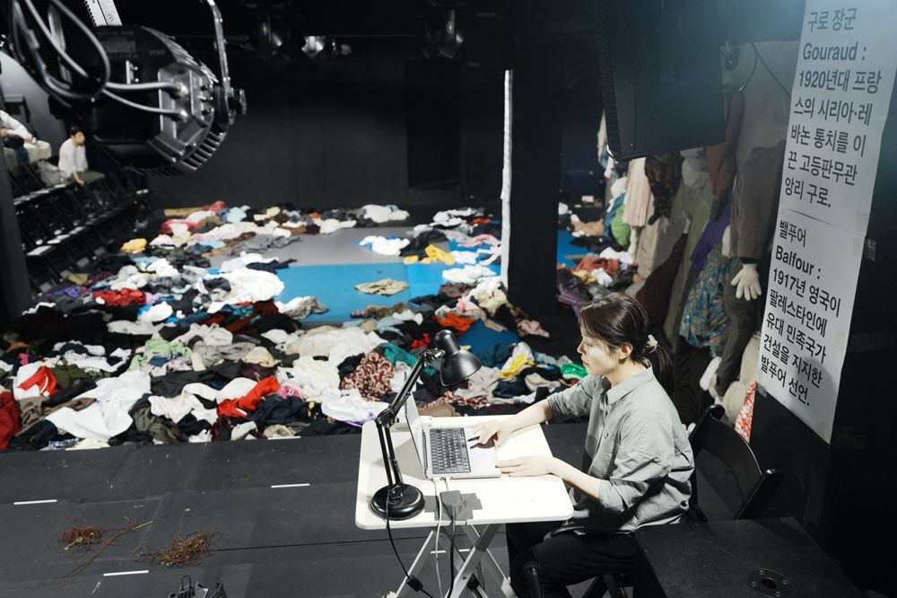

Green Pig > Archive > Wrath 震怒

In September 1982 a massacre takes place in the Palestinian refugee camps of Beirut, Lebanon. Jean Genet, who was there, walks through Shatila right after the massacre and writes "Four Hours in Shatila." In 2026, unable to enter Gaza themselves, the performers of Wrath walk into Genet's text and draw the landscape of the massacre with their bodies. The work exposes us, who do not belong to that landscape and so cannot help but stand as accused: us, standing before Gaza.
2026.7.25–8.2 / Art Space Hyehwa - Seoul Foundation for Arts and Culture creation support
Devised by: Green Pig
Text: Jeon Sunghyun
Director: Yoon Hansol
Assistant director: Cho Woongchul, Jung Yujin
Movement: Ahn Jihyeong, Yang Jinyeong
Puppet director: Lee Jihyeong
Music: Ahn Byeori
Lighting: Kim Hyeongyeon
Sound: Jeon Minbae
Producer & Stage manager: Staff Seoul
Graphic design: Workroom
Cast: Ko Gyeongcheol, Kwon Hyoeun, Kim Wontae, Kim Hyoyeong, Park Subin, Park Eunhye, Park Jeonggeun, Lee Dongyeong, Lee Seunghun, Jung Yeonjong, Choi Jihyeon
2026.10.13 Criticism (Actio webzine)
2026.9.6 Article (Naver blog)
2026.9.6 Article
2026.8.12 Audience review
2026.8.3 Audience review
2026.8.2 Audience review
2026.8.1 Audience review
2026.7.26 Audience review
Previous: Fool-Run: In the Burning Darkness | Next: Proud Mary
Back to the archive | Any work
Published 2026.11.13